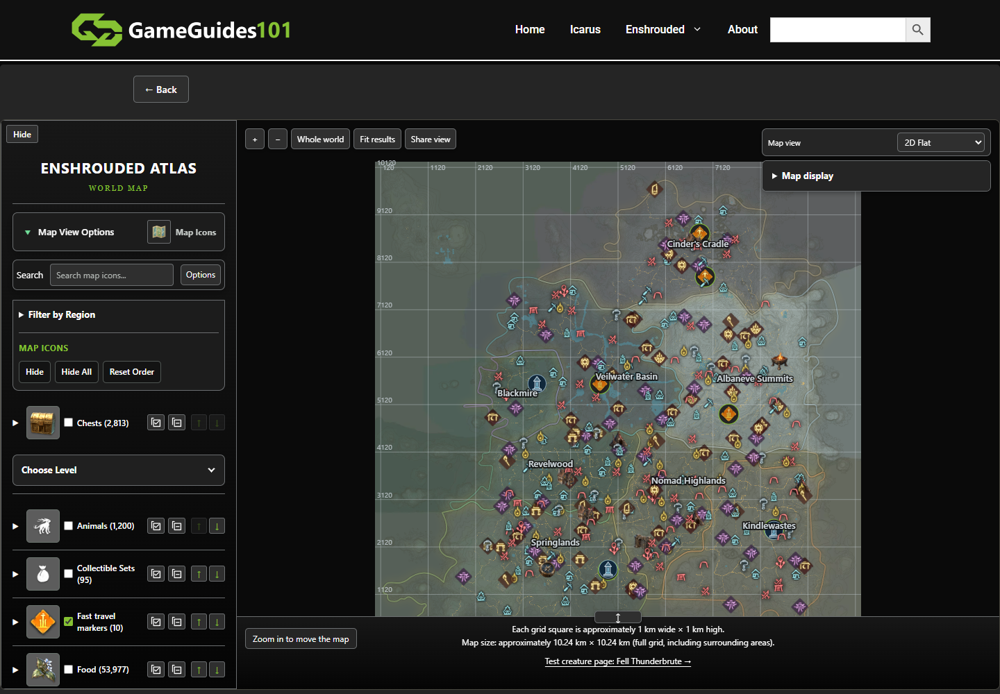
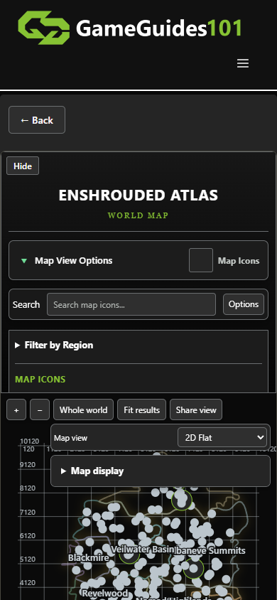
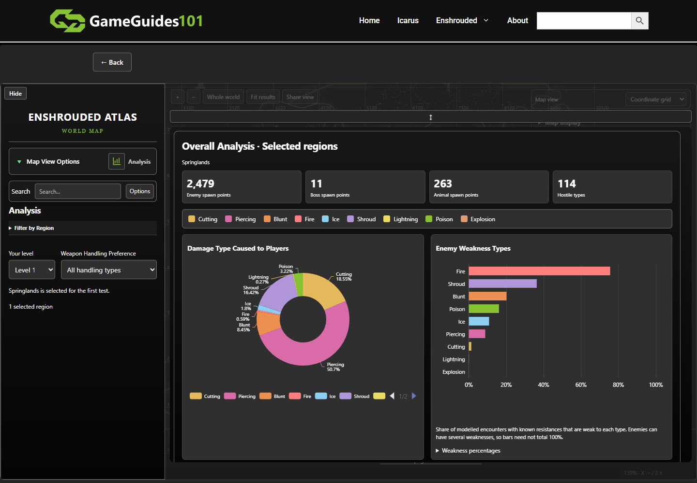

Live map reviewed · 4 November 2026
One automated expert walkthrough covering 50 numbered interaction scenarios, with follow-up verification where needed. This is not research with 50 people. Chrome headless, desktop 1440 × 1000 and phone viewport 390 × 844; a fresh touch-enabled mobile context was also inspected. T3 preview and the alternate browser host were unavailable, so local Playwright controlled Chrome. No site code or live server records were edited. Notes, pins and progress tests used an isolated browser profile.
No real-device gesture testing, full screen-reader audit, game-world coordinate validation, broad browser matrix, network-throttling benchmark, or comprehensive testing of every item/subfilter. Native folder picking, recipes workflow, note import, populated diary round-trip, circle marks and quest-completion persistence were not validated. Map export/import used a largely empty progress file; a later export confirmed pin persistence. Layer selectors were exercised; rendering fidelity was not judged across every tile. An initial drag was executed but its displacement was not measured. No pageerror events were recorded in the resumed session; this does not establish error-free operation.
| Priority | Finding and evidence | Recommended improvement |
|---|---|---|
| High | Mobile map area is cramped At 390 × 844, the expanded sidebar occupies much of the screen; the toolbar, view selector and display menu overlay the upper map. Hiding the sidebar improves the view. | Start mobile with the map dominant and filters in a drawer; combine view/display tools into a compact menu. |
| High | Default map is visually busy The initial desktop map has many competing symbols and overlapping labels. Icon size and congestion controls exist but require discovery. | Use a calmer default, clearer clustering and task presets such as Find resources, Travel and Hunt. |
| High | Quest data looks unfinished The list contains 186 entries, including repeated names such as A Beehive Smoker and entries labelled Location: Not linked in map data. Internal-looking labels include Steppes and ChineseNewYearTrader. | Group or explain quest variants, use player-facing names, and distinguish mapped quests from entries without locations. |
| Medium | Important features are concealed Creatures, Analysis, Armour, diary, quests, notes and backups sit behind Map View Options, which initially shows Map Icons. | Rename it Map tools and make the selected workspace and alternatives easier to discover. |
| Medium | Production copy includes test/debug wording The map footer links Test creature page: Fell Thunderbrute. Analysis says Springlands is selected for the first test. Help contains fixed-point decoding and build details. | Replace test wording; move extraction/build diagnostics into a technical details disclosure. |
| Medium | Coverage limits need a short visible explanation Help states markers can be possible encounters; counts represent records rather than unique places; underground/interior scenes and other sources are incomplete; compass orientation is not independently verified. These are stated limitations, not accuracy defects independently established by this review. | Show a concise coverage/source status near results; make possible spawn and missing-data states clear. |
| Medium | Share links are unwieldy A generated link was 4,653 characters; a fresh browser session restored Coordinate grid. | Keep reliable restoration, and consider shorter encoded state or a short-link option. |
| Low | Small controls and inconsistent wording Category up/down controls are compact. Search suggestions and armour counts show a literal question mark separator. Initial pan hint is Zoom in to move the map. | Enlarge frequent targets, clean up separators, and give concise contextual zoom/pan instructions. |
Initial desktop view:

Fresh mobile default:

Analysis workspace:

Observations are recorded at different verification depths; control activation alone does not establish end-to-end correctness. Locator failures in search, quest and sharing checks were resolved using the actual visible controls and follow-up evidence. Full raw interaction log.
| # | Interaction | Recorded observation |
|---|---|---|
| 1 | Initial desktop load | Map rendered with controls and region labels. |
| 2 | Zoom in | Control activated. |
| 3 | Drag map | Pointer drag executed; displacement not confirmed. |
| 4 | Zoom out | Control activated. |
| 5 | Whole world | Control activated. |
| 6 | Search iron | Four suggestions including Iron Ore deposits (2,223 locations). |
| 7 | Find iron deposits on map | Retried using visible suggestion: Iron Ore deposits selected; Skip to content Home Icarus Enshrouded Recipes About Search for: Search Button ← Back Hide ENSHROUDED ATLAS WORLD MAP Map View Options Map Icons Search Options Filter by Region MAP ICONS Hide Hide All Reset Order MAP ICONS Chests (2,813) ↑ ↓ Choose Level Animals (1,200) ↑ ↓ Collectible Sets (95) ↑ ↓ Fast travel markers (10) ↑ ↓ Food (53,977) ↑ ↓ Gatherable objects (368) ↑ ↓ Hidden Locations (42) ↑ ↓ Lore Pages (1,034) ↑ ↓ Materials & Loot (1,272) ↑ ↓ Points of interest (626) ↑ ↓ Resources (23,201) ↑ ↓ Stair Structure (2,210) ↑ ↓ Water locations (9) ↑ ↓ Matching locations Map help |
| 8 | Fit results | Control activated |
| 9 | Search nonexistent item | Skip to content Home Icarus Enshrouded Recipes About Search for: Search Button ← Back Hide ENSHROUDED ATLAS WORLD MAP Map View Options Map Icons Search Options Deselect all No mapped suggestions found. Filter by Region MAP ICONS Hide Hide All Reset Order MAP ICONS Chests (2,813) ↑ ↓ Choose Level Animals (1,200) ↑ ↓ Collectible Sets (95) ↑ ↓ Fast travel markers (10) ↑ ↓ Food (53,977) ↑ ↓ Gatherable objects (368) ↑ ↓ Hidden Locations (42) ↑ ↓ Lore Pages (1,034) ↑ ↓ Materials & Loot (1,272) ↑ ↓ Points of interest (626) ↑ ↓ Resources (23,201) ↑ ↓ Stair Structure (2,210) ↑ ↓ Water locations (9) ↑ ↓ Matching locations Map help and coverage ↕ E |
| 10 | Clear search | Control activated |
| 11 | Open search options | Skip to content Home Icarus Enshrouded Recipes About Search for: Search Button ← Back Hide ENSHROUDED ATLAS WORLD MAP Map View Options Map Icons Search Options Search in Map Icons Creatures Armour Weapons & Gems Quests Search area All regions Selected regions Springlands Revelwood Blackmire Nomad Highlands Kindlewastes Albaneve Summits Veilwater Basin Cinder's Cradle Filter by Region MAP ICONS Hide Hide All Reset Order MAP ICONS Chests (2,813) ↑ ↓ Choose Level Animals (1,200) ↑ ↓ Collectible Sets (95) ↑ ↓ Fast travel markers (10) ↑ ↓ Food (53,977) ↑ ↓ Gatherable objects (368) ↑ ↓ Hidden Locations (42) ↑ ↓ Lore Pages (1,034) ↑ ↓ Materials & |
| 12 | Open region filters | Skip to content Home Icarus Enshrouded Recipes About Search for: Search Button ← Back Hide ENSHROUDED ATLAS WORLD MAP Map View Options Map Icons Search Options Search in Map Icons Creatures Armour Weapons & Gems Quests Search area All regions Selected regions Springlands Revelwood Blackmire Nomad Highlands Kindlewastes Albaneve Summits Veilwater Basin Cinder's Cradle Filter by Region All regions Clear regions Springlands Revelwood Blackmire Nomad Highlands Kindlewastes Albaneve Summits Veilwater Basin Cinder's Cradle MAP ICONS Hide Hide All Reset Order MAP ICONS Chests (2,813) ↑ ↓ Choose Level Animals (1,200) ↑ ↓ Collectible Sets (95) ↑ ↓ F |
| 13 | Open map workspace menu | Skip to content Home Icarus Enshrouded Recipes About Search for: Search Button ← Back Hide ENSHROUDED ATLAS WORLD MAP Map View Options Map Icons Map Icons Creatures Analysis Armour Weapons & Gems Weapons & Gems Diary Quests Notes Save Map Recipes Search Options Search in Map Icons Creatures Armour Weapons & Gems Quests Search area All regions Selected regions Springlands Revelwood Blackmire Nomad Highlands Kindlewastes Albaneve Summits Veilwater Basin Cinder's Cradle Filter by Region All regions Clear regions Springlands Revelwood Blackmire Nomad Highlands Kindlewastes Albaneve Summits Veilwater Basin Cinder's Cradle MAP ICONS Hide Hide All |
| 14 | Filter Springlands region | true |
| 15 | Hide all map icons | 8 |
| 16 | Enable chest markers | true |
| 17 | Expand chest level options | evel Range 1 to + Add range All levels Include unrecorded levels 2544 recorded-level locations · 269 unrecorded. Source level does not guarantee every dropped item’s level. Animals (1,200) ↑ ↓ Collectible Sets (95) ↑ ↓ Fast travel markers (10) ↑ ↓ Food (53,977) ↑ ↓ Gatherable objects (368) ↑ ↓ Hidden Locations (42) ↑ ↓ Lore Pages (1,034) ↑ ↓ Materials & Loot (1,272) ↑ ↓ Points of interest (626) ↑ ↓ Resources (23,201) ↑ ↓ Stair Structure (2,210) ↑ ↓ Water locations (9) ↑ ↓ Matching locations Map help and coverage ↕ Each grid square is approximately 1 km wide × 1 km high. Map size: approximately 10.24 km × 10.24 km (full grid, including surr |
| 18 | Reorder collectible category | Reorder button activated |
| 19 | Reset category order | Control activated |
| 20 | Open Creatures workspace | Creatures workspace opened; Fire attack filter selected and Show creature heat map checked. Filters and heatmap settings available. |
| 21 | Open Analysis workspace | Analysis renders overall selected-region spawn counts and damage/weakness charts. Level 25 and One-handed handling selected. Chart data correctness against game not independently validated. |
| 22 | Open Armour workspace | Armour catalogue loaded 168 groups / 770 pieces, with level/protection/region filters and mapped-only toggle. Page warns variants may repeat. |
| 23 | Open Weapons and Gems workspace | Skip to content Home Icarus Enshrouded Recipes About Search for: Search Button ← Back Hide ENSHROUDED ATLAS WORLD MAP Map View Options Weapons & Gems Search Options Filter by Region Search in Map Icons Creatures Armour Weapons & Gems Quests Search area All regions Selected regions Springlands Revelwood Blackmire Nomad Highlands Kindlewastes Albaneve Summits Veilwater Basin Cinder's Cradle Weapons & Gems Weapons Weapon Gems (694) ↑ ↓ ↕ Each grid square is approximately 1 km wide × 1 km high. Map size: approximately 10.24 km × 10.24 km (full grid, including surrounding areas). Test creature page: Fell Thunderbrute → + − Whole world Fit resu |
| 24 | Open collection diary | Skip to content Home Icarus Enshrouded Recipes About Search for: Search Button ← Back Hide ENSHROUDED ATLAS WORLD MAP Map View Options Weapons & Gems Diary Search Options Search in Map Icons Creatures Armour Weapons & Gems Quests Search area All regions Selected regions Springlands Revelwood Blackmire Nomad Highlands Kindlewastes Albaneve Summits Veilwater Basin Cinder's Cradle Weapons & Gems Diary Gems Weapons All items All Found Not found Save to computer Load from file Loading diary... Saved in this browser. Save to computer downloads a JSON backup; Load from file restores it. ↕ Each grid square is approximately 1 km wide × 1 km high |
| 25 | Filter diary to found items | m wide × 1 km high. Map size: approximately 10.24 km × 10.24 km (full grid, including surrounding areas). Test creature page: Fell Thunderbrute → + − Whole world Fit results Map view 2D Flat Detailed 2D 3D-style Relief Illustrated Terrain Coordinate grid Map display Share view © 2026 - gameguides101.com |
| 26 | Open quests | Skip to content Home Icarus Enshrouded Recipes About Search for: Search Button ← Back Hide ENSHROUDED ATLAS WORLD MAP Map View Options Quests Search Options Search in Map Icons Creatures Armour Weapons & Gems Quests Search area All regions Selected regions Springlands Revelwood Blackmire Nomad Highlands Kindlewastes Albaneve Summits Veilwater Basin Cinder's Cradle Quests & Objectives Loading quests… ↕ Each grid square is approximately 1 km wide × 1 km high. Map size: approximately 10.24 km × 10.24 km (full grid, including surrounding areas). Test creature page: Fell Thunderbrute → + − Whole world Fit results Map view 2D Flat Detailed 2D |
| 27 | Select linked quest card | Quests & Objectives 186 quests "Nursery Supplies" Steppes Location: Not linked in map data Enemy Types No recorded encounter links. A Beehive Smoker Farmer Location: "Far Away Fray" Tavern, Vukah Sacrifice Hill — Kindlewastes, Nomad Highlands Enemy Types (29) A Beehive Smoker Farmer Location: Not linked in map data Enemy Types No recorded encounter links. A Black Cauldron For The Alchemist Alchemist Location: Not linked in map data Enemy Types No recorded encounter links. A Black Cauldron For The Alchemist Alchemist Location: Cradle of Dusk, Rattlebleak — Nomad Highlands Enemy Types (7) A Blast Furnace For The Blacksmith Blacksmith Lo |
| 28 | Open Notes | Skip to content Home Icarus Enshrouded Recipes About Search for: Search Button ← Back Hide ENSHROUDED ATLAS WORLD MAP Map View Options Notes Search Options Search in Map Icons Creatures Armour Weapons & Gems Quests Search area All regions Selected regions Springlands Revelwood Blackmire Nomad Highlands Kindlewastes Albaneve Summits Veilwater Basin Cinder's Cradle Notes Save location: Browser Downloads (or your browser save prompt) Choose save folder Clear folder Saved notes No saved notes yet. New note Save note Export TXT Import TXT Delete note Notes are kept in this browser. Save note also creates a TXT file. ↕ Each grid square is |
| 29 | Create and save note | wnloads (or your browser save prompt) Choose save folder Clear folder Saved notes UX test route New note Save note Export TXT Import TXT Delete note TXT download created. Check your browser Downloads. ↕ Each grid square is approximately 1 km wide × 1 km high. Map size: approximately 10.24 km × 10.24 km (full grid, including surrounding areas). Test creature page: Fell Thunderbrute → + − Whole world Fit results Map view 2D Flat Detailed 2D 3D-style Relief Illustrated Terrain Coordinate grid Map display Share view © 2026 - gameguides101.com |
| 30 | Open Save Map | Skip to content Home Icarus Enshrouded Recipes About Search for: Search Button ← Back Hide ENSHROUDED ATLAS WORLD MAP Map View Options Save Map Search Options Search in Map Icons Creatures Armour Weapons & Gems Quests Search area All regions Selected regions Springlands Revelwood Blackmire Nomad Highlands Kindlewastes Albaneve Summits Veilwater Basin Cinder's Cradle Save Map Circle marks, pins, quest progress and found locations are saved in this browser. Export a backup to move them to another device. Hide found locations Save to PC Upload save Save a JSON file with quest progress, found locations, pins and circle marks. Uploading merg |
| 31 | Export map progress backup | enshrouded-map-progress-2026-11-04.json |
| 32 | Restore exported backup | asin Cinder's Cradle Save Map Save uploaded. Quest progress, found locations, pins and circle marks merged. Hide found locations Save to PC Upload save Save a JSON file with quest progress, found locations, pins and circle marks. Uploading merges the file with your current progress. ↕ Each grid square is approximately 1 km wide × 1 km high. Map size: approximately 10.24 km × 10.24 km (full grid, including surrounding areas). Test creature page: Fell Thunderbrute → + − Whole world Fit results Map view 2D Flat Detailed 2D 3D-style Relief Illustrated Terrain Coordinate grid Map display Share view © 2026 - gameguides101.com |
| 33 | Switch terrain to Detailed 2D | detailed |
| 34 | Switch terrain to 3D-style Relief | terrain |
| 35 | Switch terrain to Illustrated Terrain | illustrated |
| 36 | Switch terrain to Coordinate grid | grid |
| 37 | Open display settings | Skip to content Home Icarus Enshrouded Recipes About Search for: Search Button ← Back Hide ENSHROUDED ATLAS WORLD MAP Map View Options Save Map Search Options Search in Map Icons Creatures Armour Weapons & Gems Quests Search area All regions Selected regions Springlands Revelwood Blackmire Nomad Highlands Kindlewastes Albaneve Summits Veilwater Basin Cinder's Cradle Save Map Save uploaded. Quest progress, found locations, pins and circle marks merged. Hide found locations Save to PC Upload save Save a JSON file with quest progress, found locations, pins and circle marks. Uploading merges the file with your current progress. ↕ Each gri |
| 38 | Open icon and zoom settings | Icons & zoom is expanded by default when Map display opens; clicking its heading collapses it. Reopened for subsequent size/congestion tests. |
| 39 | Increase map icon size | 1.5 |
| 40 | Reduce crowded icon overlap | 0.25 |
| 41 | Share current view | https://gameguides101.com/enshrouded-map/#em=%7B%22v%22%3A1%2C%22lootLevels%22%3A%7B%22active%22%3Afalse%2C%22ranges%22%3A%5B%7B%22min%22%3A1%2C%22max%22%3A55%7D%5D%2C%22unknown%22%3Atrue%7D%2C%22regionView%22%3A%22personal%22%2C%22regionFilters%22%3A%7B%22enemies%22%3A%5B%22Grassland%22%2C%22Deepforest%22%2C%22TallTrees%22%2C%22Steppes%22%2C%22Desert%22%2C%22ColdHeights%22%2C%22Wetland%22%2C%22AncientLand%22%5D%2C%22armour%22%3A%22all%22%2C%22weapons%22%3A%22all%22%2C%22weaponRegions%22%3A%5B%22Grassland%22%2C%22Deepforest%22%2C%22TallTrees%22%2C%22Steppes%22%2C%22Desert%22%2C%22ColdHeights%22%2C%22Wetland%22%2C%22AncientLand%22%5D%7D%2C%22c |
| 42 | Reset display preferences | grid |
| 43 | Hide desktop sidebar | Skip to content Home Icarus Enshrouded Recipes About Search for: Search Button ← Back Show ↕ Each grid square is approximately 1 km wide × 1 km high. Map size: approximately 10.24 km × 10.24 km (full grid, including surrounding areas). Test creature page: Fell Thunderbrute → + − Whole world Fit results Map view 2D Flat Detailed 2D 3D-style Relief Illustrated Terrain Coordinate grid Map display Icons & zoom Icon size -50% -25% -20% Normal +25% +50% +75% +100% Hide icon totals Reveal more icons as you zoom in Icons by Zoom Per Territory Reduce icon congestion Off 5% fewer 10% fewer 15% fewer 20% fewer 25% fewer 30% fewer 35% fewer 40% fewer 4 |
| 44 | Show desktop sidebar again | Control activated |
| 45 | Use map at mobile size 390 × 844 | {"viewport":390,"documentWidth":390,"observation":"Tested existing state and a fresh touch-enabled mobile context. Sidebar above map; controls cover upper terrain; no horizontal page overflow."} |
| 46 | Hide sidebar on mobile to use map | Sidebar collapsed with Show control available; map controls occupy top of canvas. |
| 47 | Add custom map pin | Right-click opens Add pin here, name and House icon selected, Save pin closes editor. |
| 48 | Reload to verify saved note and pin | After reload, UX test route note remains; a new progress export contains UX test base pin with House icon and coordinates. |
| 49 | Keyboard navigation through map controls | {"tag":"BUTTON","label":"Zoom out","text":"−"} |
| 50 | Open shared view in fresh browser context | {"urlLength":4653,"restoredLayer":"grid"} |